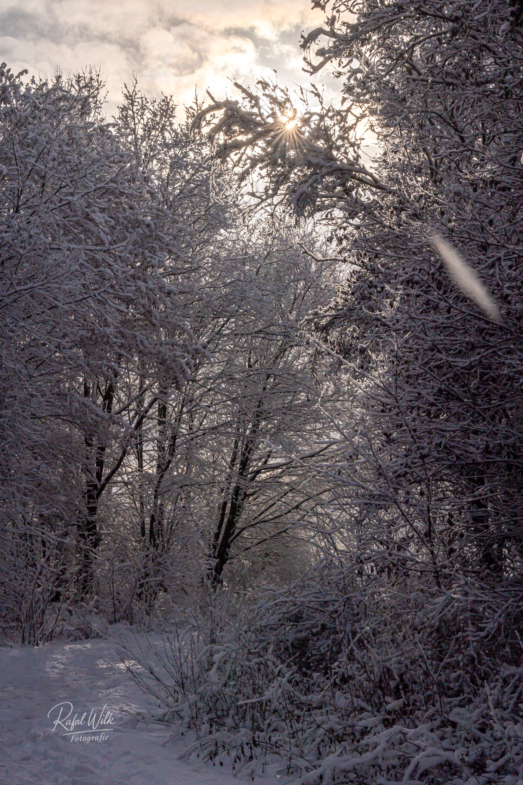

FotodiSogno — Photography by Rafał Wilk
Rafał Wilk
Photography portfolio
Selected work
Images that define my way of seeing
A focused selection of people, places and details in which light sets the atmosphere.


Light / Place / Moment

About
I photograph what is easy to overlook
People, places and brief moments in which light creates atmosphere.
I look for natural emotion, calm compositions and images that remain in memory longer than the event itself. My work moves between portrait, street, travel and visual detail.
Based in the NetherlandsAvailable for selected collaborations and travel projects
Start a conversationContact
Have an idea for a shoot or collaboration?
Tell me briefly what you have in mind. I am easiest to reach by e-mail or WhatsApp.